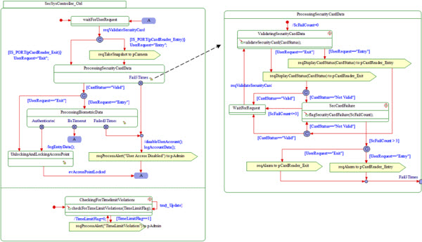

Guidelines and Drawing Conventions
-
If possible, Statechart diagrams should flow vertically from top to bottom. The initial state should be located
near the top of the diagram and any termination connectors should be located near the bottom of the diagram.
-
Typically, all states should have at least one entry transition and at least one exit transition. A "dead end"
state should be a very rare thing!
-
Avoid nesting of states beyond 3 or 4 levels. Ensure complex nesting is simplified with sub state diagrams.
-
All transition lines shall be rectilinear or straight. Transitions should not cross each other or cross through
states.
-
Labels shall be positioned on the left-hand side of the arrow direction.
-
For readability reasons, use Mealy syntax (= event [condition]/action on transition) wherever possible. Always
place the action on a transition on a new line from the event and guard.
-
Moore syntax (= action on entry, reaction in state) should be avoided unless necessary. This feature allows a block
to react to events within a state without actually leaving that state via a transition. Never use "action on
exit".
-
Diagram Connectors should only be used when the readability of a statechart diagram is disturbed by a direct
transition.
-
It is essential that the EnterExit Points connectors have meaningful names and the two charts that are connected
can be shown side by side, with the connecting transition being easily identifiable. Using similar positions of the
connector on each chart may facilitate this.
Naming Conventions
-
The diagram shall have the associated use case name in plain text at the top of the diagram.
-
State names should be verbs and indicate the current mode or condition of the block. Typically names are in the
present tense. Names must be unique among sibling states and should never be the same as the name of a block or an
event. Avoid names like "idle" or "wait".

|